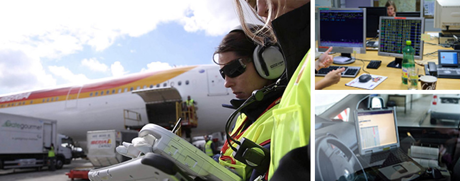
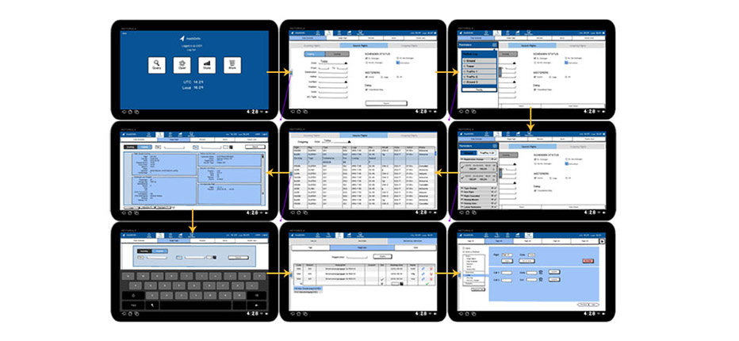
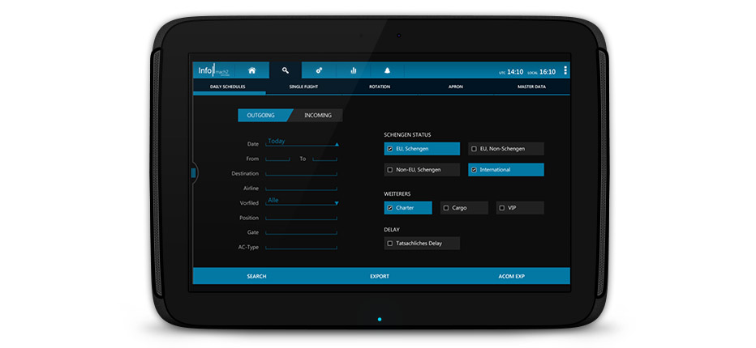

InfoMach - Vienna Airport Communication
A mobile information and communication channel for airport authorities at Vienna Airport
Duration:
2 months
Type:
Internship Work
Roles and Responsibilities:
UX Design, Project Management
The Goal
The goal of this project was to bring a web-based flight information system to tablet application. The target group were Ramp Agents, who manage the aircrafts on site and Terminal Information Guides who help passengers with queries.
Why
The web-based information system being static was limiting the ramp agents as they are required to move around on the airport. Their job is even more dynamic when working in collaboration with other ramp agents. In that case, having access to work status is useful. So having a mobile device with them was intended to increase the efficiency. Moreover, the information system is also used by the terminal information guides who attend to many passengers for their queries and need easy access to the inquired information.
Design Process
We started off with studying the existing desktop system and interviewing users to identify their
needs and problems.

We followed a highly iterative process right from ideation phase. We created paper prototypes to discuss our initial design ideas.
Later, we created Balsamiq mockups of the screens and designed the interactions in detail.

Towards the end, we designed high-fidelity visuals of a few screens to define the visual language and created a prototype for discussion with the development teams.
Challenges and Design
Since the stakes of managing the aircrafts are high, precision for data input for important. Access to updated information must be easy and quick as per the nature of the job. One of the major challenges was to adapt the existing website on the tablet screen due to the large amounts of information. Finally, since the users were trained for the existing website, consistency in the tablet version was expected.
Re-structuring the information to fit the screen size was conflicting with the consistency requirement. This was overcome by exploiting the conventional design principles for tablet application and hence aiming for the modifications that are intuitive in nature or easy to learn.
